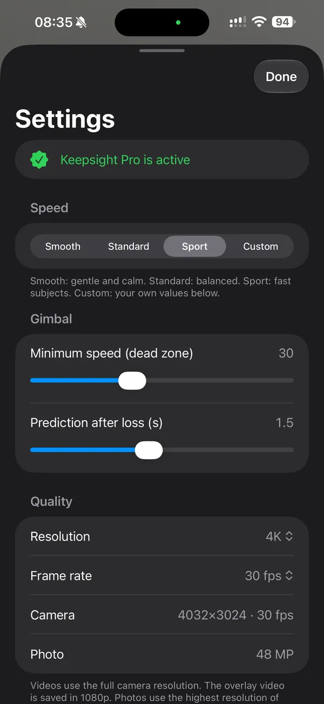

Réglages et aide
Langue, mode d’aide et réglages pour utilisateurs avancés.


Les commutateurs les plus importants se trouvent dans les deux panneaux latéraux. Tout le reste est dans le panneau de gauche sous Tous les réglages.
Mode aide
Le point d’interrogation en haut de chaque panneau latéral active le mode d’aide. Des indications jaunes avec une courte explication apparaissent alors sous les éléments du menu, avec un schéma pour les plus importants.
Langue
Keepsight utilise la langue de votre iPhone. Pour en choisir une autre uniquement pour Keepsight, touchez Langue sous Tous les réglages. Cela ouvre les réglages de l’iPhone pour Keepsight. Les commandes vocales changent en même temps.
Réglages pour utilisateurs avancés
| Réglage | Signification |
|---|---|
| Vitesse « Personnalisé » | Gain, amortissement, vitesse maximale, accélération et zone de calme du suivi. |
| Vitesse minimale | Uniquement pour l’AK4500 : la plus petite commande à laquelle le gimbal réagit encore. Augmentez-la si le gimbal s’arrête lors de petits écarts. |
| Prédiction après la perte | Combien de temps le gimbal continue de panoramiquer quand le sujet est masqué. |
| Direction | Inverser le panoramique ou l’inclinaison. |
| Modèle de détection | Quel modèle détecte un sujet. RF-DETR Small et YOLOX-S sont disponibles. |
| Infos développeur | Affiche la fréquence d’images, les commandes du gimbal et le temps de calcul du modèle dans le viseur. |
| Réinitialiser | Rétablit les réglages du suivi. |
À propos et licences
Vous y trouvez la version de l’app, des liens vers ce site et les licences des modèles de détection utilisés.